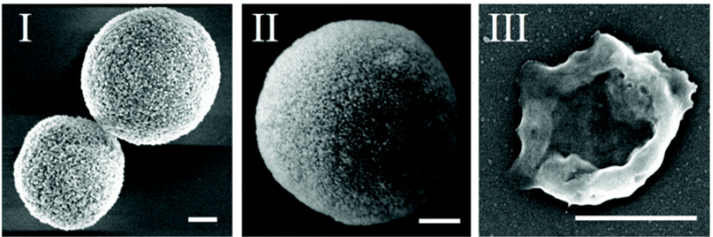

WEI-CHING LIAO'S GROUP
(廖韋晴博士研究團隊)

PUBLICATIONS
- Chang, W.-H.; Lee, Y.-F.; Liu, Y.-W.; Willner, I.*; Liao, W.-C.*Stimuli-Responsive Hydrogel Microcapsules for the Amplified Detection of MicroRNAs. Nanoscale 2021 13, 16799-16808.
- Singuru, M. M. R.; Liao, W.-C.*Chuang, M.-C.* Genotoxin-Responsive DNA Capsules for the Detection of Styrene Oxide.Sens. Actuators B: Chem. 2021 349, 130776.
- Lilienthal, S.; Fischer, A.; Liao, W.-C.; Cazelles, R.; Willner, I. Single and Bilayer Polyacrylamide Hydrogel-Based Microcapsules for the Triggered Release of Loads, Logic Gate Operations, and Intercommunication between Microcapsules. ACS Appl. Mater. Interfaces 2020 12, 31124-31136.
- Chen, W.-H.; Liao, W.-C. Sohn, Y. S.; Fadeev, M.; Cecconello, A.; Nechushtai, R.; Willner, I. Stimuli-Responsive Nucleic Acid-Based Polyacrylamide Hydrogel-Coated Metal–Organic Framework Nanoparticles for Controlled Drug Release. Adv. Funct. Mater. 2018 28, 1705137.
- Liao, W.-C. Willner, I. Synthesis and Applications of Stimuli-Responsive DNA-Based Nano- and Micro-Sized Capsules. Adv. Funct. Mater. 2017 17, 1702732.
- Chen, W.-H.; Yu, X.; Liao, W.-C. Sohn, Y. S.; Cecconello, A.; Kozell, A.; Nechushtai, R.; Willner, I. ATP-Responsive Aptamer-Based Metal–Organic Framework Nanoparticles (NMOFs) for the Controlled Release of Loads and Drugs. Adv. Funct. Mater. 2017 27, 1702102.
- Liao, W.-C.; Lilienthal, S.; Kahn, J. S.; Riutin, M.; Sohn, Y. S.; Nechushtai, R.; Willner, I. pH- and Ligand-Induced Release of Loads from DNA-Acrylamide Hydrogel Microcapsules. Chem. Sci. 2017 8, 3362-3373.
- Vázquez-González, M.; Torrente-Rodríguez, R. M.; Kozell, A.; Liao, W.-C.; Cecconello, A.; Campuzano, S.; Pingarrón, J. M.; Willner, I. Mimicking Peroxidase Activities with Prussian Blue Nanoparticles and Their Cyanometalate Structural Analogues. Nano Lett. 2017 17, 4958-4963.
- Wang, S.; Cazelles, R.; Liao, W.-C.; Vázquez-González, M.; Zoabi, A.; Abu-Reziq, R.; Willner, I. Mimicking Horseradish Peroxidase and NADH Peroxidase by Heterogeneous Cu(II)-Modified Graphene Oxide Nanoparticles. Nano Lett. 2017 17, 2043-2048.
- Vázquez-González, M.; Liao, W.-C.; Cazelles, R.; Wang, S.; Yu, X.; Gutkin, V.; Willner, I. Mimicking Horseradish Peroxidase Functions Using Cu(II)-Modified Carbon Nitride Nanoparticles or Cu(II)-Modified Carbon Dots as Heterogeneous Catalysts. ACS Nano 2017 11, 3247-3253.
- Liao, W.-C.; Riutin, M.; Parak, W. J.; Willner, I. Programmed pH-Responsive Microcapsules for the Controlled Release of CdSe/ZnS Quantum Dots. ACS Nano 2016 10, 8683-8689.
Highlighted on nanotechweb.org, Aug 29, 2016. pH-Responsive DNA Capsules Release QD Loads, available at:
http://nanotechweb.org/cws/article/tech/66042
- Liao, W.-C.; Sohn, Y. S.; Riutin, M.; Cecconello, A.; Parak, W. J.; Nechushtai, R.; Willner, I. The Application of Stimuli-Responsive VEGF- and ATP-Aptamer-Based Microcapsules for the Controlled Release of an Anticancer Drug, and the Selective Targeted Cytotoxicity toward Cancer Cells. Adv. Funct. Mater. 2016 26, 4262-4273.
- Huang, F.; Liao, W.-C.; Sohn, Y. S.; Nechushtai, R.; Lu, C.-H.; Willner, I. Light-Responsive and pH-Responsive DNA Microcapsules for Controlled Release of Loads. . Am. Chem. Soc. 2016 138, 8936-8945.
- Golub, E.; Albada, H. B.; Liao, W.-C.; Biniuri, Y.; Willner, I. Nucleoapzymes: Hemin/G-Quadruplex DNAzyme–Aptamer Binding Site Conjugates with Superior Enzyme-like Catalytic Functions. J. Am. Chem. Soc. 2016 138, 164-172.
- Liao, W.-C.; Lu, C.-H.; Hartmann, R.; Wang, F.; Sohn, Y. S.; Parak, W. J.; Willner, I. Adenosine Triphosphate-Triggered Release of Macromolecular and Nanoparticle Loads from Aptamer/DNA-Cross-Linked Microcapsules. ACS Nano 2015 9, 9078-9086.
Highlighted on nanotechweb.org, Aug 24, 2015. Cross-Linked Microcapsules Release Anti-Cancer Drugs, available at:
http://nanotechweb.org/cws/article/tech/62303
- Lin, C.-H.; Liao, W.-C.; Chen, H.-K.; Kuo, T.-Y. Paper Spray-MS for Bioanalysis. Bioanalysis 2014 6, 199-208.
- Liao, W.-C.; Annie Ho, J.-a. Improved Activity of Immobilized Antibody by Paratope Orientation Controller: Probing Paratope Orientation by Electrochemical Strategy and Surface Plasmon Resonance Spectroscopy. Biosens. Bioelectron. 2014 55, 32-38.
- Liao, W.-C.; Chuang, M.-C.; Ho, J.-a. A. Electrochemical Sensor for Multiplex Screening of Genetically Modified DNA: Identification of Biotech Crops by Logic-Based Biomolecular Analysis. Biosens. Bioelectron. 2013 50, 414-420.
- Ho, J.-a. A.; Hsu, W.-L.; Liao, W.-C.; Chiu, J.-K.; Chen, M.-L.; Chang, H.-C.; Li, C.-C. Ultrasensitive Electrochemical Detection of Biotin Using Electrically Addressable Site-Oriented Antibody Immobilization Approach via Aminophenyl Boronic Acid. Biosens. Bioelectron. 2010 26, 1021-1027.
- Liao, W.-C.; Ho, J.-a. A. Attomole DNA Electrochemical Sensor for the Detection of Escherichia coli O157. Anal. Chem. 2009 81, 2470-2476.
- Cheng, Y. J.; Liao, W.-C.; Wang, C. M. Proton-Assisted Iron(III) Recognition with 4,4'-(4,5-Diaminonaphthalen-1,8-Yldiazo)-Bisbenzenesulfonate. J. Electroanal. Chem. 2008 612, 15-21.
- Viswanathan, S.; Liao, W.-C.; Huang, C.-C.; Hsu, W.-L.; Ho, J.-a. A. Rapid Analysis of L-Dopa in Urine Samples Using Gold Nanoelectrode Ensembles. Talanta 2007 74, 229-234.